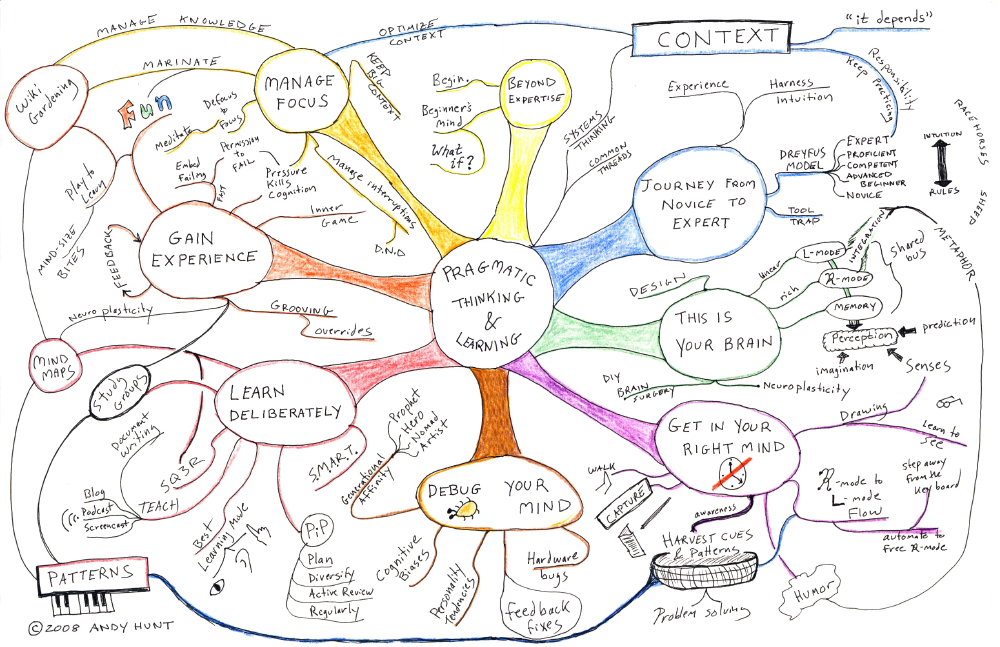

<!DOCTYPE html>
<html>
    <head>
        <meta charset="utf-8">
        <title>Pragmatic Thinking & Learning - Refactor Your Wetware. | Kevin Renella</title>

        <link rel="stylesheet" href="revealjs/css/reveal.css">
        <link rel="stylesheet" href="revealjs/css/theme/black.css" id="theme">
        <link rel="stylesheet" href="revealjs/lib/css/zenburn.css">
        <link rel="stylesheet" href="plugin/title-footer/title-footer.css">
        <link rel="stylesheet" href="css/project.css">

        <script>
            if (window.location.search.match(/print-pdf/gi)) {
                document.write('<link rel="stylesheet" href="css/pdf.css" type="text/css">');
            }
        </script>

        <!--[if lt IE 9]>
        <script src="revealjs/lib/js/html5shiv.js"></script>
        <![endif]-->
    </head>
    <body>
        <div class="reveal">
            <div class="slides">
                <!-- Title -->
                <section data-markdown>
                    <script type="text/template">
                        ## Refactor Your Wetware
                        <blockquote>
                            <a href="http://blog.toolshed.com/">Andy Hunt</a> is co-founder of The Pragmatic Programmers, LLC, and is well known as a programmer, author, and publisher
                        </blockquote>
                    </script>
                </section>

                <!-- Mind Map / Plan -->
                <!-- <section data-state="no-toc-progress" data-markdown data-background="images/mind-map.png"> -->
                <section>
                    <section data-state="no-toc-progress" data-markdown>
                        <script type="text/template">
                            ## Map, mind map
                            
                        </script>
                    </section>
                </section>

                <!-- Gain experience -->
                <section>
                    <section data-markdown>
                        <script type="text/template">
                            ## Gain experience 
                            <blockquote>
                                Gaining experience is key to learning and growth<br />-<br />We are learning best by doing
                            </blockquote>
                        </script>
                    </section>
                    <section data-markdown>
                        <script type="text/template">
                            ## Perception is based on prediction
                            - Perception is based on prediction
                            - Prediction is based on context and past experience
                              - Difference in some friend's appareance ?
                              - Stereotitipycal story of the wife's new hairdo

                            <blockquote>
                                Why ? We see based on old input.
                            </blockquote>
                        </script>
                    </section>
                    <section data-markdown>
                        <script type="text/template">
                            ### Experience using <i class="highlight">scaffolding</i>
                            - Get used to what success feels like

                            <br />
                            ### Experience using <i class="highlight">unscaffolding</i>
                            - Negative scaffolding
                            - Make it artificially harder than it should base
                            - Tie weights when running for training
                            - Real seems a lot easier
                        </script>
                    </section>
                </section>

                <!-- Context switching -->
                <section>
                    <section data-markdown>
                        <script type="text/template">
                            ## Context Switching is expensive
                            <blockquote>
                                Loss an instant 20 to 30 percent of productivity by context switching and dramatically increase error risks
                            </blockquote>
                        </script>
                    </section>
                    <section data-markdown>
                        <script type="text/template">
                            ## So many things compete for your attention daily
                            <blockquote>
                                Design problem in multiprocessor systems : you can spend all the CPU cycles coordinating tasks with all other the CPUs and not actually get any work done
                            </blockquote>
                        </script>
                    </section>
                    <section data-markdown>
                        <script type="text/template">
                            ## Better smoke a joint than read emails 
                            <iframe id="joint-email" style="margin:5px 5px auto auto;width:700px;height:700px" scrolling="no" data-chart></iframe>
                        </script>
                    </section>
                    <section data-markdown>
                        <script type="text/template">
                            ## At work
                            - <span class="highlight">Schedule</span> your email conversations
                            - <span class="highlight">Never use</span> CMD/CTRL TAB
                            - <span class="highlight">Use</span> multi desktops arranges by tasks
                            - <span class="highlight">Use</span> multi monitors
                        </script>
                    </section>
                    <section data-markdown>
                        <script type="text/template">
                            ## Use the right tools
                            - <a href="https://heyfocus.com/">HeyFocus</a><br /><small>Block distractions & improve your productivity with Focus</small>
                            - <a href="https://hazeover.com/fr/">Haze Hover</a><br /><small>Distraction dimmer</small>
                            - <a href="http://foggynoggin.com/">Focus</a><br /><small>Remove distractions and get stuff done</small>
                        </script>
                    </section>
                    <section data-markdown>
                        <script type="text/template">
                            ## Prepare to be interrupted
                            You have few seconds, <br />
                            leave yourself some "bread-crumbs" for yourself.

                            <pre><code data-trim>
                            void powerfulFunction()
                            {
                                for (Object item in items)
                                {
                                    // Compute the power of the item
                                    // http://stackoverflow.com/...
                                }
                            }
                            </code></pre>

                        </script>
                    </section>
                </section>

                <!-- Closing -->
                <section data-markdown>
                    <script type="text/template">
                        ## Thank You
                        <blockquote cite="">
                        	“In the beginner's mind there are many possibilities, but in the expert's there are few.”<br />
                             <footer class="quote-footer">
                                 <cite><a href="">Shunryu Suzuki-Roshi</a></cite>
                             </footer>
                        </blockquote>
                    </script>
                </section>
            </div>
        </div>
        <script type="text/javascript" src="revealjs/lib/js/head.min.js"></script>
        <script type="text/javascript" src="revealjs/js/reveal.js"></script>
        <script type="text/javascript">
        var jointEmail = [
            {
                selector : "#joint-email", // must be query like an id that points to the iframe
                type : "polararea", // can be either of the following : line, bar, radar, polararea, pie, doughnut
                data : [
                    {
                        value: 3,
                        color:"#F7464A",
                        highlight: "#FF5A5E",
                        label: "Smoke a joint"
                    },
                    {
                        value: 10,
                        color: "#46BFBD",
                        highlight: "#5AD3D1",
                        label: "Check emails"
                    }
                ],
                options : {
                    responsive : true,
                    //Number - The backdrop padding above & below the label in pixels
   scaleBackdropPaddingY : 0,

   //Number - The backdrop padding to the side of the label in pixels
   scaleBackdropPaddingX : 5
                }
            }
    ];

            Reveal.initialize({
                history: true,
                transition: 'fade', // none/fade/slide/convex/concave/zoom

                chart : { // The option
                    items : jointEmail // Some object
                  },

                dependencies: [
                    // Cross-browser shim that fully implements classList - https://github.com/eligrey/classList.js/
                    { src: 'revealjs/lib/js/classList.js', condition: function() { return !document.body.classList; } },

                    // Interpret Markdown in <section> elements
                    { src: 'revealjs/plugin/markdown/marked.js', condition: function() { return !!document.querySelector( '[data-markdown]' ); } },
                    { src: 'revealjs/plugin/markdown/markdown.js', condition: function() { return !!document.querySelector( '[data-markdown]' ); } },

                    // Syntax highlight for <code> elements
                    { src: 'revealjs/plugin/highlight/highlight.js', async: true, callback: function() { hljs.initHighlightingOnLoad(); } },

                    // Zoom in and out with Alt+click
                    { src: 'revealjs/plugin/zoom-js/zoom.js', async: true },

                    // Speaker notes
                    { src: 'revealjs/plugin/notes/notes.js', async: true },

                    // Footer
                    { src: 'plugin/title-footer/title-footer.js', async: true, callback: function() { title_footer.initialize("Pragmatic Thinking & Learning - Andy Hunt"); } },

                    //
                    { src: 'plugin/chartjs/Chart.min.js'},
                    { src: 'plugin/chartjs/charted.js'} // This is the plugin
                ]
            });

            Reveal.addEventListener("slidechanged",function(){
                setTimeout(function(){
                    Chart.defaults.global.responsive = true;
                },500);
            },false);
        </script>

    </body>
</html>
